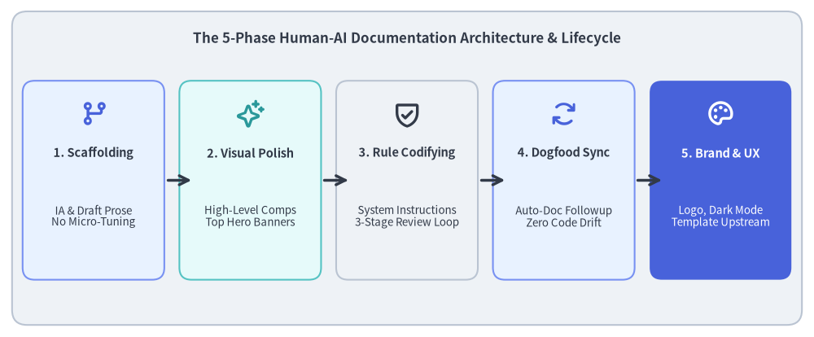
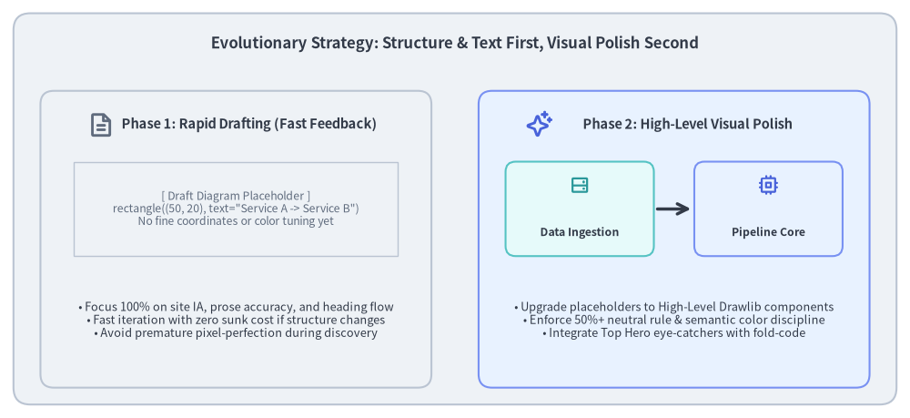
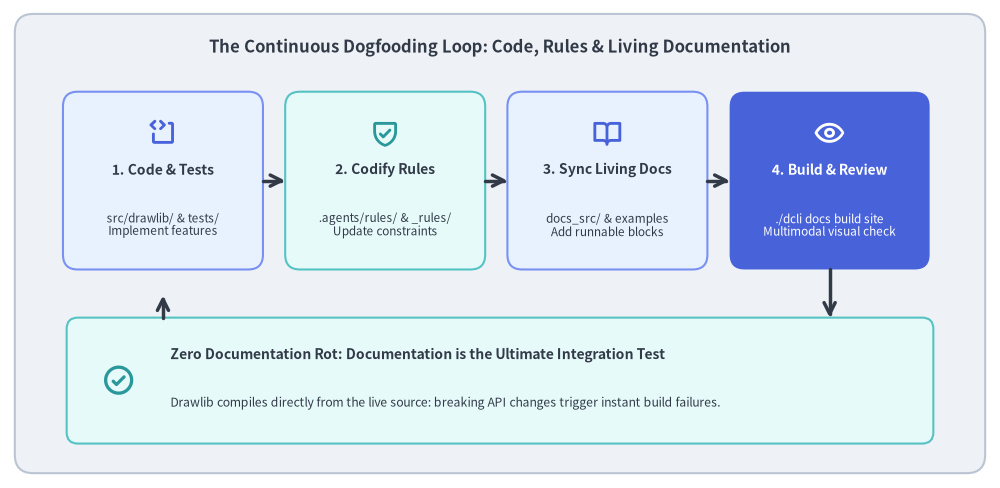
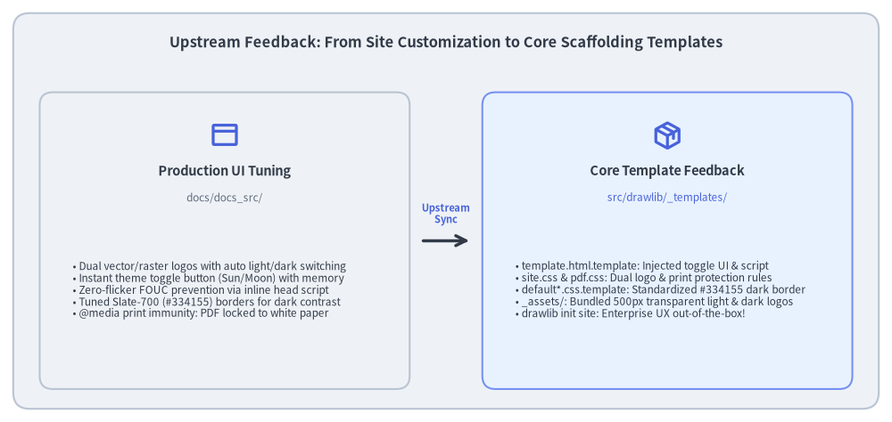

Case Study: Building & Evolving Documentation Sites with AI Agents
Modern software libraries require extensive, visually rich documentation to communicate their architecture, API capabilities, and design patterns. However, traditional technical documentation quickly falls into the trap of documentation decay (Doc Rot): external diagramming tools drift out of sync with codebases, screenshot captures become obsolete, and human maintenance across dozens of pages becomes unsustainable.
Drawlib's own official documentation—spanning 79 HTML pages, over 6,900 cross-references, and more than 400 pure-Python diagrams—was constructed and continues to evolve autonomously through human-AI agent collaboration.
This case study outlines the practical 5-phase methodology used to architect, author, refine, and continuously maintain this large-scale documentation site using "Illustrated Documentation as Code" and AI dogfooding.

Source Code
from drawlib.canvas import save, setup
from drawlib.icons import phosphor
from drawlib.lines import line
from drawlib.shapes import rectangle
from drawlib.styles import Colors, Styles
from drawlib.text import text
setup(width=135, height=56)
# Title & background card
rectangle((67.5, 28.0), width=131, height=52, style=Styles.Neutral.patch(shape_r=2.5))
text(
(67.5, 49.5),
"The 5-Phase Human-AI Documentation Architecture & Lifecycle",
style=Styles.DarkBold.patch(text_size=12.2),
)
# 5 Phase Cards
phases = [
(15.5, "1. Scaffolding", "IA & Draft Prose\nNo Micro-Tuning", phosphor.git_branch, Styles.PrimaryNeutral, Colors.Primary),
(41.5, "2. Visual Polish", "High-Level Comps\nTop Hero Banners", phosphor.sparkle, Styles.SecondaryNeutral, Colors.Secondary),
(67.5, "3. Rule Codifying", "System Instructions\n3-Stage Review Loop", phosphor.shield_check, Styles.Neutral, Colors.Dark),
(93.5, "4. Dogfood Sync", "Auto-Doc Followup\nZero Code Drift", phosphor.arrows_clockwise, Styles.PrimaryNeutral, Colors.Primary),
(119.5, "5. Brand & UX", "Logo, Dark Mode\nTemplate Upstream", phosphor.palette, Styles.PrimaryFlat, Colors.White),
]
for cx, title, desc, icon_fn, card_st, icon_col in phases:
is_accent = (cx > 110)
rectangle((cx, 26.0), width=23.5, height=33, style=card_st.patch(shape_r=2.0))
icon_st = Styles.WhiteBold if is_accent else Styles.PrimaryBold.patch(icon_color=icon_col)
icon_fn((cx, 37.0), width=4.8, style=icon_st)
t_st = Styles.WhiteBold if is_accent else Styles.DarkBold
d_st = Styles.White if is_accent else Styles.Dark
text((cx, 30.5), title, style=t_st.patch(text_size=10.5))
text((cx, 20.0), desc, style=d_st.patch(text_size=9.6))
# Arrows between cards
for x in [27.25, 53.25, 79.25, 105.25]:
line((x + 0.5, 26.0), (x + 4.5, 26.0), arrow_head="->", style=Styles.DarkBold)
save()
1. The Core Problem: Fragmentation & Documentation Decay
In conventional software development, technical documentation suffers from deep workflow fragmentation:
- Disconnected Toolchains: Developers write code in Git, write documentation in separate systems (Wikis, Notion, Google Docs), and draw diagrams in third-party GUI tools (draw.io, Figma, Omnigraffle).
- Asynchronous Drift: When an API parameter changes or a component is refactored, updating external diagram files, exporting static PNGs, and re-uploading them is cumbersome. Inevitably, diagrams diverge from reality.
- High Cognitive Burden on Review: Readers must reconcile outdated screenshots with current code, leading to confusion and loss of trust in the documentation.
The Drawlib Solution: "Illustrated Documentation as Code"
Drawlib eliminates this fragmentation by treating technical diagrams and prose as version-controlled code:
- Single Source of Truth (SoT): Markdown content and executable Python drawing blocks live side-by-side inside the repository (
docs_src/). - Headless Build Pipeline: Running
./dcli docs build sitecompiles both documentation prose and renders hundreds of illustrations simultaneously. - Dogfooding Quality Guarantee: The documentation build directly exercises the live library (
src/drawlib/). A broken API or invalid style token immediately breaks the documentation build, catching regressions before code is ever merged.
2. Phase 1: Information Architecture & Rapid Drafting
When bootstrapping a comprehensive documentation site, developers often make the mistake of attempting to draw perfect, pixel-aligned diagrams on day one. In reality, premature aesthetic polish during architectural discovery is extremely wasteful.

Source Code
from drawlib.canvas import save, setup
from drawlib.icons import phosphor
from drawlib.lines import line
from drawlib.shapes import rectangle
from drawlib.styles import Colors, Styles
from drawlib.text import text
setup(width=135, height=62)
# Outer container card
rectangle((67.5, 31.0), width=131, height=58, style=Styles.Neutral.patch(shape_r=2.5))
text(
(67.5, 55.5),
"Evolutionary Strategy: Structure & Text First, Visual Polish Second",
style=Styles.DarkBold.patch(text_size=12.0),
)
# Left Column: Phase 1 Rapid Draft
rectangle((35.0, 26.5), width=58, height=44, style=Styles.Neutral.patch(shape_r=2.0))
phosphor.file_text((15.0, 43.5), width=4.0, style=Styles.MutedBold)
text((37.0, 43.5), "Phase 1: Rapid Drafting (Fast Feedback)", style=Styles.DarkBold.patch(text_size=10.5))
# Draft placeholder simulation
rectangle((35.0, 31.0), width=48, height=14, style=Styles.Neutral.patch(line_style="dashed", shape_line_width=1.0))
text((35.0, 31.0), "[ Draft Diagram Placeholder ]\nrectangle((50, 20), text=\"Service A -> Service B\")\nNo fine coordinates or color tuning yet", style=Styles.Muted.patch(text_size=8.8))
# Draft principles list
text((35.0, 14.5), "• Focus 100% on site IA, prose accuracy, and heading flow\n• Fast iteration with zero sunk cost if structure changes\n• Avoid premature pixel-perfection during discovery", style=Styles.Dark.patch(text_size=9.2))
# Right Column: Phase 2 Visual Refinement
rectangle((100.0, 26.5), width=58, height=44, style=Styles.PrimaryNeutral.patch(shape_r=2.0))
phosphor.sparkle((80.0, 43.5), width=4.0, style=Styles.PrimaryBold)
text((102.0, 43.5), "Phase 2: High-Level Visual Polish", style=Styles.DarkBold.patch(text_size=10.5))
# Refined components simulation
rectangle((86.0, 31.0), width=22, height=14, style=Styles.SecondaryNeutral.patch(shape_r=1.5))
phosphor.hard_drives((86.0, 34.5), width=3.2, style=Styles.SecondaryBold)
text((86.0, 27.5), "Data Ingestion", style=Styles.DarkBold.patch(text_size=8.8))
line((97.5, 31.0), (102.5, 31.0), arrow_head="->", style=Styles.DarkBold)
rectangle((114.0, 31.0), width=22, height=14, style=Styles.PrimaryNeutral.patch(shape_r=1.5))
phosphor.cpu((114.0, 34.5), width=3.2, style=Styles.PrimaryBold)
text((114.0, 27.5), "Pipeline Core", style=Styles.DarkBold.patch(text_size=8.8))
# Refined principles list
text((100.0, 14.5), "• Upgrade placeholders to High-Level Drawlib components\n• Enforce 50%+ neutral rule & semantic color discipline\n• Integrate Top Hero eye-catchers with fold-code", style=Styles.Dark.patch(text_size=9.2))
save()
2.1. Collaborative IA Discussion with the AI Agent
The first step was an interactive planning dialogue with the AI coding assistant:
- Target Audience & Learning Progression: Dividing the material into 9 thematic sections (
01_getting_started,02_drawing_primitives,03_smartarts,04_charts,05_diagrams,06_graph,07_animations,08_doc_builder_and_cli,09_ai_agents_and_advanced). - Single Navigation Source of Truth: Codifying the hierarchy in
navbar.md. Each page was mapped to a clear conceptual scope with zero redundant overlaps.
2.2. The "Structure & Prose First" Drafting Rule
During initial page creation, the agent was instructed not to spend time fine-tuning graphics. Instead:
- Generate complete markdown prose, code listings, and explanations.
- For required diagrams, output lightweight placeholder blocks using simple shapes:
from drawlib.canvas import save, setup from drawlib.shapes import rectangle setup(width=100, height=30) rectangle((50, 15), width=80, height=20, text="Architecture Overview (Draft)") save() - Benefit: Human reviewers could review the entire site narrative, verify technical correctness, and rearrange sections in minutes without throwing away hours of fine-tuned graphic coordinates.
3. Phase 2: Visual Refinement & Top Hero Eye-Catchers
Once the overall structure and page outlines were validated, the team began the systematic enhancement of visual assets.
3.1. Upgrading from Primitives to High-Level Components
Placeholder boxes were replaced with tailored high-level Drawlib components:
- Cloud & Microservices: Replaced manual rectangles with
drawlib.diagrams.architectureand official Phosphor/GCP icon badges. - Pipelines & Sequences: Replaced manual lines with
drawlib.smartarts.ChevronProcessordrawlib.diagrams.sequence. - Relational Models & State Machines: Formatted with
drawlib.diagrams.eranddrawlib.diagrams.state. - Topologies & DAGs: Auto-laid out using
drawlib.graph.
3.2. The "Top Hero" Eye-Catcher Standard
To maximize reader engagement and visual retention, the documentation established the Top Hero Rule:
- Placement at Lines 5–15: Every documentation page features a prominent Top Hero illustration immediately below
# Titleand the introductory lead sentence. fold-codeFencing: By marking code fences withdrawlib fold-code center file:<name>.png caption:"...", the rendered image appears prominently above the fold, while the Python drawing source code is collapsed by default into an expandable<details>block.- Visual Density: Each page includes at least 2+ diagrams, ensuring complex ideas are explained both textually and diagrammatically.
3.3. 720pt Typography Math
To ensure in-image typography harmonizes seamlessly with the 16px body prose of the documentation site, diagram labels are designed using Drawlib's 720pt base coordinate rule:
$$\text{Rendered Label Size} = \text{text_size} \times \frac{\text{Canvas Width}}{720}$$
By maintaining text_size >= 10.0 (standard labels 10.5–12.0, headers 12.0–14.0, floor 9.5), diagram labels render with the exact visual weight of standard reading text, eliminating eye strain.
4. Phase 3: Codifying Rules into Agent Instructions
As the site grew to dozens of pages, managing consistency across pages through ad-hoc chat prompts became unmanageable. The critical breakthrough was formalizing human review standards into machine-readable rule files.
4.1. From Tacit Knowledge to Repository Rules
Rules were organized into the .agents/rules/ directory and permanently attached to the AI agent's execution context:
drawlib.md(.agents/rules/drawlib.md): Core library principles, the 50%+ neutral card requirement, PascalCase style token imports, and project archetypes.workflow.md(.agents/rules/workflow.md): The mandatory 6-step dogfooding lifecycle (Implement $\rightarrow$ Unit Test $\rightarrow$ Code Check $\rightarrow$ Sync Docs $\rightarrow$ Render $\rightarrow$ Multimodal Review).docs.md(.agents/rules/docs.md): Documentation authoring guidelines, navbar requirements, and build commands.
4.2. The Autonomous 3-Stage Verification Loop
Rather than delivering uninspected code, the agent was mandated to run an autonomous self-healing loop:
- Stage 1 (Static Check): Verify Top Hero placement at lines 5–15, check for
fold-code, verify2+diagrams per page, and ensuretext_size >= 10.0. - Stage 2 (Micro-Geometry Review with
-g): Render diagrams with Drawlib's coordinate grid overlay (uv run drawlib show <file> [diagram.png] -g -o preview.png) and inspect via vision tools (view_file) to eliminate label clipping, arrow misalignment, and cramped margins in a single shot. - Stage 3 (Macro-Page HTML Review): Run
./dcli docs build siteand verify that zero broken links exist (./dcli docs serve site --check). Inspect full-page headless screenshots to ensure proper rhythm and responsive display.
5. Phase 4: Automated Documentation Evolution (Dogfooding)
A major triumph of this architecture is how documentation updates are seamlessly tied to feature development.

Source Code
from drawlib.canvas import save, setup
from drawlib.icons import phosphor
from drawlib.lines import line, lines
from drawlib.shapes import rectangle
from drawlib.styles import Colors, Styles
from drawlib.text import text
setup(width=135, height=66)
# Outer container card
rectangle((67.5, 33.0), width=131, height=62, style=Styles.Neutral.patch(shape_r=2.5))
text(
(67.5, 59.5),
"The Continuous Dogfooding Loop: Code, Rules & Living Documentation",
style=Styles.DarkBold.patch(text_size=12.0),
)
# 4 Loop Cards
nodes = [
(22.0, 41.5, "1. Code & Tests", "src/drawlib/ & tests/\nImplement features", phosphor.code_block, Styles.PrimaryNeutral, Colors.Primary),
(52.0, 41.5, "2. Codify Rules", ".agents/rules/ & _rules/\nUpdate constraints", phosphor.shield_check, Styles.SecondaryNeutral, Colors.Secondary),
(82.0, 41.5, "3. Sync Living Docs", "docs_src/ & examples\nAdd runnable blocks", phosphor.book_open, Styles.PrimaryNeutral, Colors.Primary),
(112.0, 41.5, "4. Build & Review", "./dcli docs build site\nMultimodal visual check", phosphor.eye, Styles.PrimaryFlat, Colors.White),
]
for cx, cy, title, desc, icon_fn, card_st, icon_col in nodes:
is_accent = (cx > 100)
rectangle((cx, cy), width=27, height=24, style=card_st.patch(shape_r=2.0))
icon_st = Styles.WhiteBold if is_accent else Styles.PrimaryBold.patch(icon_color=icon_col)
icon_fn((cx, cy + 6.5), width=4.0, style=icon_st)
t_st = Styles.WhiteBold if is_accent else Styles.DarkBold
d_st = Styles.White if is_accent else Styles.Dark
text((cx, cy + 1.5), title, style=t_st.patch(text_size=10.0))
text((cx, cy - 6.0), desc, style=d_st.patch(text_size=8.5))
# Top Forward Arrows (1 -> 2 -> 3 -> 4)
for x in [35.5, 65.5, 95.5]:
line((x, 41.5), (x + 3.0, 41.5), arrow_head="->", style=Styles.DarkBold)
# Bottom Integration Card: "Living Documentation as Ultimate Integration Test"
rectangle((67.5, 14.5), width=117, height=17, style=Styles.SecondaryNeutral.patch(shape_r=1.5))
phosphor.check_circle((16.0, 14.5), width=4.5, style=Styles.SecondaryBold)
text((23.0, 18.0), "Zero Documentation Rot: Documentation is the Ultimate Integration Test", style=Styles.DarkBold.patch(text_size=10.0, halign="left"))
text((23.0, 11.5), "Drawlib compiles directly from the live source: breaking API changes trigger instant build failures.", style=Styles.Dark.patch(text_size=8.8, halign="left"))
# Down arrow from Node 4 to Bottom card
line((112.0, 29.5), (112.0, 23.0), arrow_head="->", style=Styles.DarkBold)
# Return arrow from Bottom card back to Node 1
lines([(22.0, 23.0), (22.0, 26.0)], arrow_head="->", style=Styles.DarkBold)
save()
5.1. Automated Synchronization on Every Feature
Whenever a new feature is added to src/drawlib/ (e.g. a new chart type, a geometric polygon, or an icon integration), the AI agent executes a coordinated update:
- Implementation & Unit Tests: Implement the feature in
src/drawlib/and add comprehensive tests intests/. - Update Embedded Rules: Update internal rule files in
src/drawlib/_rules/so future agent prompts immediately recognize the new API signatures. - Update Documentation Pages: Add runnable examples and practical use cases to relevant
docs/docs_src/chapters. - Site Rebuild & Visual Verification: Build the documentation site (
./dcli docs build site) to render the new diagrams and verify that no visual regressions occurred.
5.2. Documentation as the Ultimate Integration Test
Because Drawlib's documentation is compiled directly from the live Python source code, the 400+ diagrams in the documentation site serve as a massive real-world end-to-end integration test suite. If an internal refactoring introduces an inadvertent breaking change, the documentation build immediately fails, catching bugs that isolated unit tests might overlook.
6. Phase 5: Brand Identity, UI Customization & Upstream Feedback
In the final phase of site polish, the team focused on enterprise-grade brand identity, accessibility, and UI customization.

Source Code
from drawlib.canvas import save, setup
from drawlib.icons import phosphor
from drawlib.lines import line
from drawlib.shapes import rectangle
from drawlib.styles import Colors, Styles
from drawlib.text import text
setup(width=135, height=64)
# Outer container card
rectangle((67.5, 32.0), width=131, height=60, style=Styles.Neutral.patch(shape_r=2.5))
text(
(67.5, 57.5),
"Upstream Feedback: From Site Customization to Core Scaffolding Templates",
style=Styles.DarkBold.patch(text_size=11.8),
)
# Left Column: Production Site Customization
rectangle((34.0, 27.5), width=56, height=45, style=Styles.Neutral.patch(shape_r=2.0))
phosphor.browser((34.0, 43.5), width=4.5, style=Styles.PrimaryBold)
text((34.0, 38.0), "Production UI Tuning", style=Styles.DarkBold.patch(text_size=10.5))
text((34.0, 34.0), "docs/docs_src/", style=Styles.Muted.patch(text_size=8.5))
bullets_left = [
"• Dual vector/raster logos with auto light/dark switching",
"• Instant theme toggle button (Sun/Moon) with memory",
"• Zero-flicker FOUC prevention via inline head script",
"• Tuned Slate-700 (#334155) borders for dark contrast",
"• @media print immunity: PDF locked to white paper",
]
text((11.0, 20.0), "\n".join(bullets_left), style=Styles.Dark.patch(text_size=8.5, halign="left"))
# Center Upstream Feedback Arrow
line((64.0, 27.5), (71.0, 27.5), arrow_head="->", style=Styles.DarkBold)
text((67.5, 31.5), "Upstream\nSync", style=Styles.PrimaryBold.patch(text_size=8.0))
# Right Column: Core Template Library
rectangle((101.0, 27.5), width=56, height=45, style=Styles.PrimaryNeutral.patch(shape_r=2.0))
phosphor.package((101.0, 43.5), width=4.5, style=Styles.PrimaryBold)
text((101.0, 38.0), "Core Template Feedback", style=Styles.DarkBold.patch(text_size=10.5))
text((101.0, 34.0), "src/drawlib/_templates/", style=Styles.Primary.patch(text_size=8.5))
bullets_right = [
"• template.html.template: Injected toggle UI & script",
"• site.css & pdf.css: Dual logo & print protection rules",
"• default*.css.template: Standardized #334155 dark border",
"• _assets/: Bundled 500px transparent light & dark logos",
"• drawlib init site: Enterprise UX out-of-the-box!",
]
text((78.0, 20.0), "\n".join(bullets_right), style=Styles.Dark.patch(text_size=8.5, halign="left"))
save()
6.1. Production Site UI Enhancements
Rather than accepting generic template defaults, the documentation site underwent targeted UI enhancements:
- Dual Brand Logos with Auto Switching: Integrating official 500px transparent light (
logo.png) and dark (logo_dark.png) logos into the sidebar header, switching automatically via CSS attributes and media queries. - Instant Theme Toggle Button: Placing a smooth Sun / Moon toggle button in the sidebar header with
localStoragepersistence, allowing readers to toggle their preferred theme with zero page reload. - FOUC (Flash of Unstyled Content) Prevention: Injecting an inline synchronous
<script>in the<head>of the HTML template to detect and applydata-themebefore the DOM renders, completely eliminating white screen flash during dark mode reloads. - Subtle Slate-700 Border Luminance: Fine-tuning dark mode dividers and card borders to
#334155(Slate-700 /rgb(51, 65, 85)), providing a balanced 5.2% contrast ratio against#0f172a(Slate-900) dark backgrounds without visual harshness. - Print & PDF Export Immunity: Enforcing
@media print { ... }overrides to ensure that PDF exports and physical printing always lock to clean white backgrounds and dark text, regardless of user theme settings.
6.2. Upstream Feedback into Core Project Templates
Crucially, these refinements were not left as one-off hacks inside docs/docs_src/. Once perfected on the production site, they were fed back directly into Drawlib's core scaffolding engine (src/drawlib/_templates/):
project/site/template.html.template: Pre-wired with the toggle button, dual logos, and FOUC prevention.css/targets/site.css&css/targets/pdf.css: Production-tested responsive rules and print immunity.css/themes/default*.css.template: Standardized Slate-700 dark borders._assets/: Pre-bundled 500px transparent light and dark logos.
As a result, any developer running uv run drawlib init site immediately receives a production-ready, dark-mode-enabled documentation portal out of the box.
7. Key Takeaways & Best Practices
Building and maintaining large-scale technical documentation with AI coding assistants yields four essential best practices:
- Structure First, Aesthetics Second: Never invest hours fine-tuning diagram coordinates during early planning. Use lightweight placeholder boxes to finalize information architecture and prose first.
- Top Hero First-View Rule:
Place an illustrative Top Hero diagram at lines 5–15 with
fold-code. A clear visual anchor immediately engages readers and establishes a shared mental model before they read in-depth prose. - Machine-Readable Rules Over Ad-Hoc Prompting:
Ad-hoc chat instructions degrade over long sessions. Codify formatting standards, color tokens, and multimodal verification loops into persistent repository rule files (
.agents/rules/). - Dogfooding as Continuous Quality Assurance: When documentation and code live in the same repository and compile together, documentation becomes the ultimate integration test. Feature implementation and documentation synchronization become a single, unified development cycle.